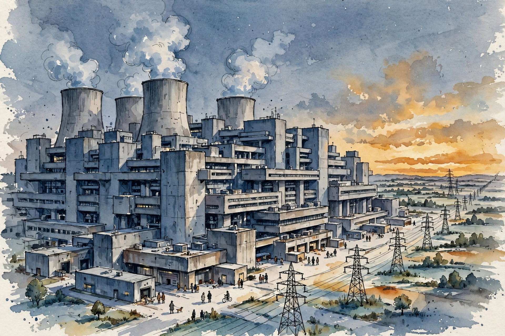
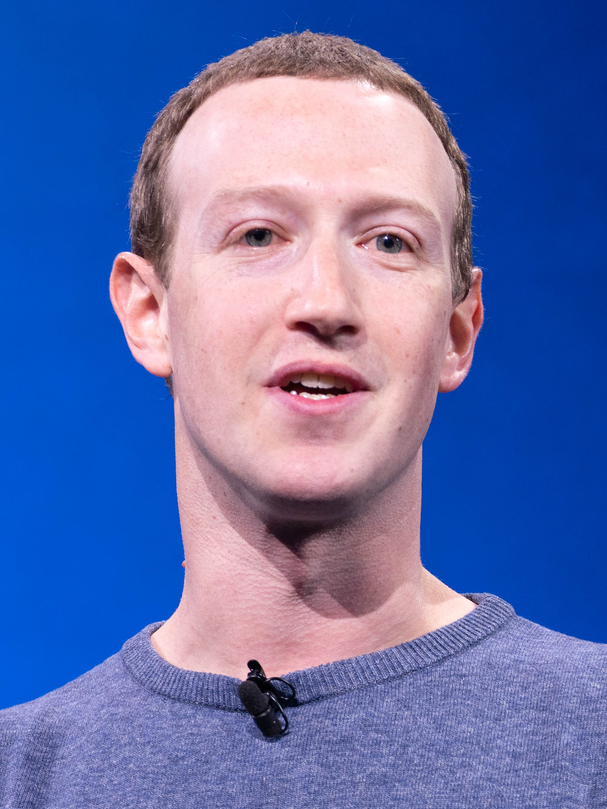

Dwarkesh Patel · Ep 8 · Companion
Mark Zuckerberg
Llama 3, $10 billion models, and the gigawatt datacenter no one has built yet. Zuckerberg on open source as strategy, the $1 billion he refused in 2006, and why Caesar Augustus at nineteen is the role model. This companion follows the full conversation in order.

Illustration. The gigawatt datacenter: a city block of compute at dusk. AI-generated watercolor made for this page.
Watch. The official episode video. Use the chapter menu above to jump to any section of this companion as you listen.
The Wisdom Index: every nugget in this companion
§1 · The models
Llama 3: Three Sizes at Once
Source fact

Photo. Mark Zuckerberg. Source: Wikimedia Commons.
Meta trains three Llama 3 versions: 8 billion parameters, 70 billion, and a 405 billion dense model still training. The 8B and 70B release now, leading for their scale. The 70B sits around 82 MMLU with leading math and reasoning scores. The 405B, mid-training, already reads around 85 MMLU.
The striking comparison: the smallest Llama 3, at 8B, is nearly as powerful as the biggest Llama 2. One generation collapsed the frontier into the pocket model.
Llama 3: parameters and MMLU
Hover any bar for detail. Log scale on parameters.
Source: Dwarkesh Patel interviews Mark Zuckerberg, episode transcript §1. MMLU figures are Zuckerberg's stated numbers.
Nugget 1 · Product
Ship three sizes at once
What happened. Meta released 8B and 70B together while 405B still trained, covering pocket, server, and frontier in one launch.
Why it matters. One model serves one user. A ladder of sizes serves every user, and each rung markets the next.
The principle. Launch the ladder, not the rung. Cover the whole price-performance curve on day one.
§2 · Datacenters
The Gigawatt No One Has Built
Source fact
no one has built a single Gigawatt data center yet
Mark Zuckerberg on training clusters · Episode transcript §2
Zuckerberg walks the scale ladder: 300 megawatts, 500 megawatts, a gigawatt. Each step breaks something new. To put it in perspective, he says a gigawatt is the size of a meaningful nuclear power plant, only dedicated to one training run. No one has built a single gigawatt training cluster yet.
Nugget 2 · Scale
Name the scale: gigawatt
What happened. Zuckerberg named the next unit of competition: not the model, the gigawatt, a nuclear plant per training run.
Why it matters. Whoever names the unit sets the game. The gigawatt reframes AI competition as power competition.
The principle. Find the unit your industry will be measured in next, and say it first. Units are strategy.
Toy: the datacenter scale slider
Drag from megawatts to gigawatts. Compare against Zuckerberg's nuclear-plant yardstick.
Yardstick: 1 GW ≈ one meaningful nuclear power plant, per Zuckerberg on the episode. Homes figure uses ~1.2 kW average per US home.
§3 · Strategy
Would You Open Source the $10 Billion Model?
Source fact
Would you open source the $10 billion model?
Dwarkesh Patel's question · Episode transcript §3
Zuckerberg's answer is conditional and strategic: as long as open sourcing helps Meta, yes. The logic is the classic commoditize-your-complement play. Meta's business is not model sales. It trades in attention and distribution around models. Open weights commoditize the model layer and grow the ecosystem Meta monetizes.
Interpretation
The $10 billion figure matters because it tests the strategy's limit. Open sourcing gets more expensive as models do. The answer reveals where Meta draws the line: at the point open weights stop helping.
Nugget 3 · Strategy
Open source the $10 billion model?
What happened. Asked about open sourcing a $10B model, Zuckerberg said yes, conditionally: as long as it helps Meta.
Why it matters. Open source is not ideology here. It is a pricing play: commoditize the layer you do not monetize.
The principle. Give away the complement, sell the core. But reprice the gift as the gift gets expensive.
§4 · The refusal
The $1 Billion He Refused
Source fact
Dwarkesh goes back to 2006, when Zuckerberg did not sell for $1 billion. The follow-up: at what price would he have sold? Zuckerberg's answer reframes the question entirely. If someone offered $5 trillion, of course he would have sold. The point is not the number. It is that no offer on the table priced what the company could become.
Interpretation
The $5 trillion is not a valuation. It is a way of saying the decision was never about price. It was about whether any buyer could see the same future, and none could.
Nugget 4 · Decisions
Refuse $1 billion, think in trillions
What happened. A $1 billion offer in 2006 looked like a fortune. Zuckerberg measured it against a future no buyer could price.
Why it matters. Acquisition offers price the present. Founders price the future. The gap is the whole negotiation.
The principle. When an offer arrives, ask what future it assumes. If the buyer cannot see yours, there is no price.
§5 · Research
FAIR at Ten, and the Coding Surprise
Source fact
Meta started FAIR about 10 years ago, on the thesis that open research on the road to general intelligence would pay off. It did, in an unexpected direction. The surprise of the last 18 months: coding turned out to matter for far more domains than anyone planned. During Llama 2, the team did not even prioritize coding, assuming Meta AI users would not ask for it. They were wrong, and the correction shaped Llama 3.
Nugget 5 · Research
Coding was the surprise
What happened. A decade-old research bet paid off sideways: code capability lifted everything, not just coding.
Why it matters. The highest-return research is often the kind whose applications you cannot name in advance.
The principle. Fund the capability, not the use case. General tools find their markets.
§6 · Distribution
200 Million Creators
Source fact
About 200 million creators live on Meta's platforms, and nearly all of them follow the same pattern: make things, reach people, repeat. Meta AI slots into that loop as the assistant layer. The distribution is the product strategy: the models matter because billions of people already live where they will run.
On inference economics, Zuckerberg thinks in industrial units: $10Bs of inference today, $100Bs eventually. Intelligence at that scale stops being a product and becomes a utility, priced like power.
Nugget 7 · Scale
Industrial-scale intelligence
What happened. Inference spend moves from billions to hundreds of billions. Intelligence gets priced like electricity.
Why it matters. Utilities compete on cost and reliability, not features. The winners own generation and distribution.
The principle. When your product becomes a utility, build like a utility: massive capacity, ruthless unit cost.
§7 · Role models
Caesar Augustus at Nineteen
Source fact
Dwarkesh asks about role models, and Zuckerberg reaches for Rome. Caesar Augustus, by nineteen, was already one of the most important people in Roman politics, leading at an age when most people choose majors. The young Zuckerberg's thought, as Dwarkesh frames it: I can do this because Caesar Augustus did this.
Interpretation
The example works quietly. Augustus did not wait for permission or credentials. He acted at scale while young, and the empire followed. It is a founder's mirror, not a historian's.
Nugget 6 · Ambition
Learn from Augustus at nineteen
What happened. Zuckerberg's role model took power at nineteen. The lesson he took: youth is not a waiting period.
Why it matters. Role models set the clock. Pick one who moved early and the timeline compresses.
The principle. Choose exemplars who started before they were ready. Their calendar becomes yours.
§8 · The end case
Llama-10 and the End Case
Source fact
Dwarkesh pushes to the end case: Llama-10. What does the world look like when the models are that good and that cheap? Zuckerberg is measured: progress is progressive, each generation compounding, and a lot is already baked into the trajectory. He does not claim to see the endpoint clearly.
What he does claim: the efficient model matters as much as the frontier one. If the world runs $10Bs to $100Bs of inference, the winner is the intelligence that is cheapest to serve at industrial scale, not just smartest in the lab.
The episode in seven lines
- Llama 3 ships as a ladder: 8B near Llama 2 max, 70B at 82 MMLU, 405B still climbing.
- The next unit of competition is the gigawatt. No one has built one yet.
- Open source is strategy, not ideology: give away the complement, sell the core.
- Refusing $1 billion in 2006 was never about price. No buyer priced the future.
- FAIR's decade bet paid off sideways: coding lifted everything.
- Two hundred million creators are the distribution. Intelligence becomes a utility.
- Augustus moved at nineteen. Pick role models who started before they were ready.
Distilled from Dwarkesh Patel's interview with Mark Zuckerberg (video id bc6uFV9CJGg). All figures are the guest's statements from the episode transcript.